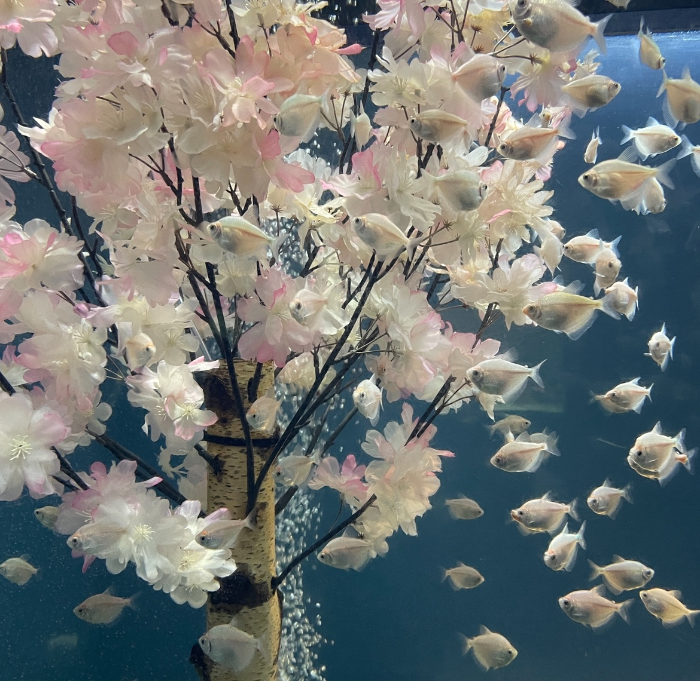
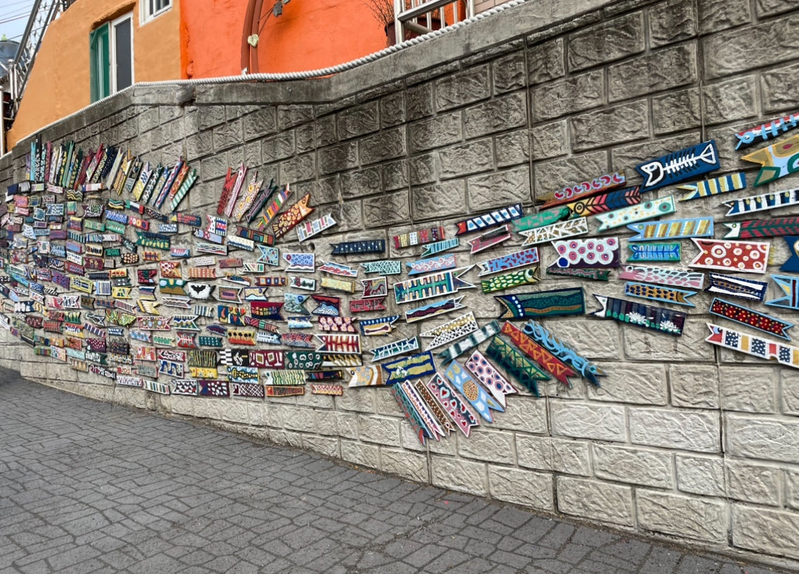
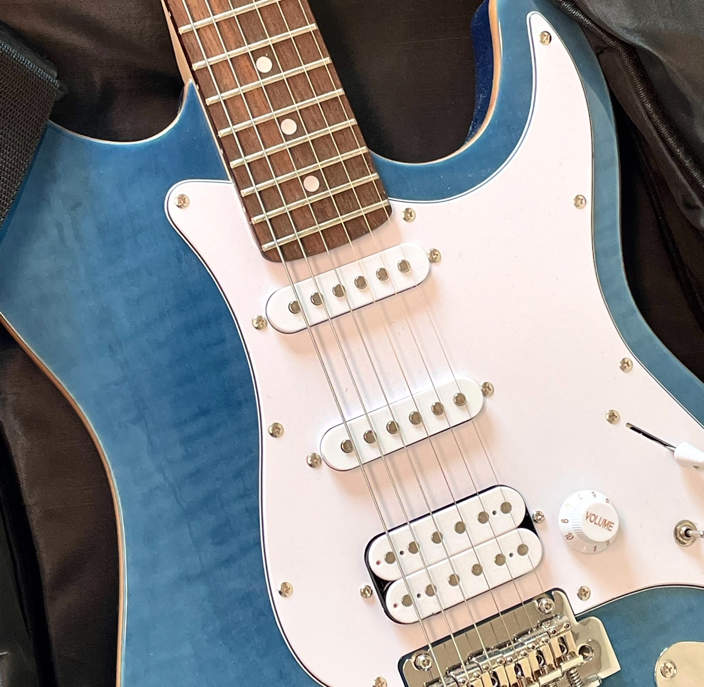
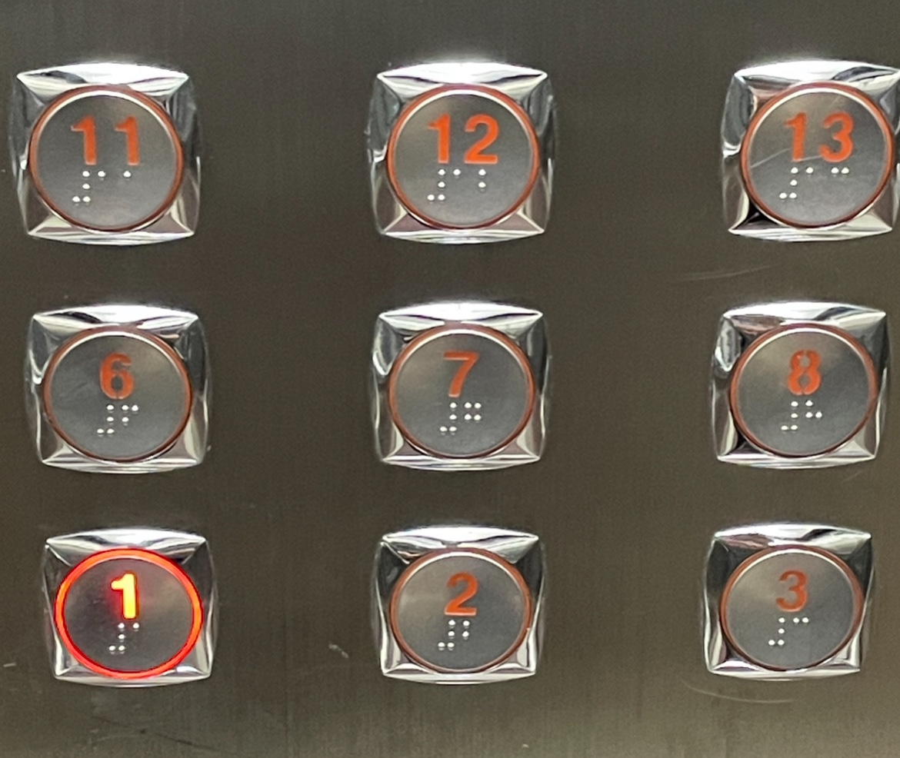
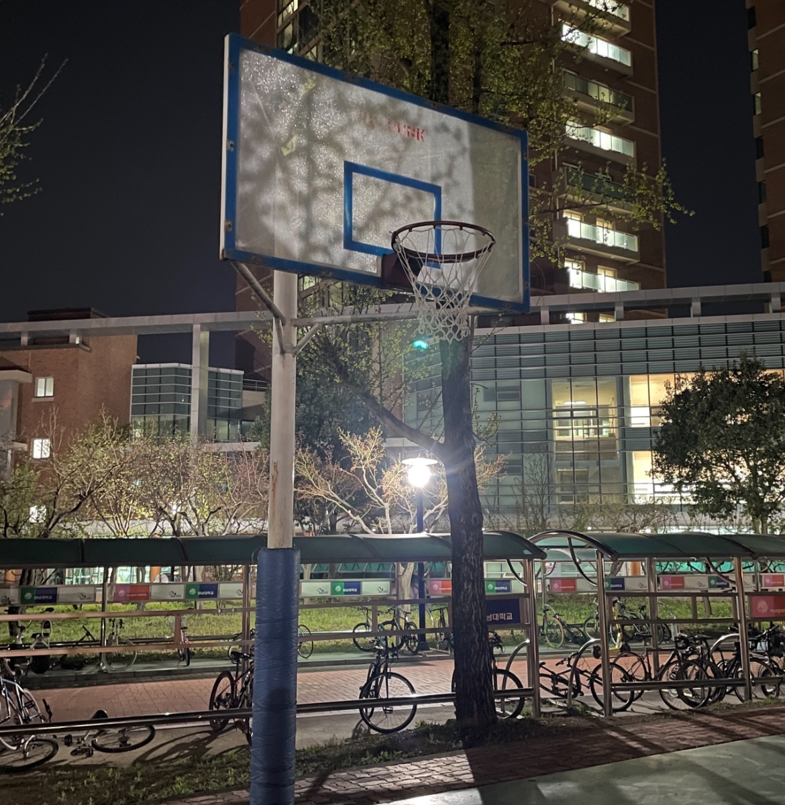
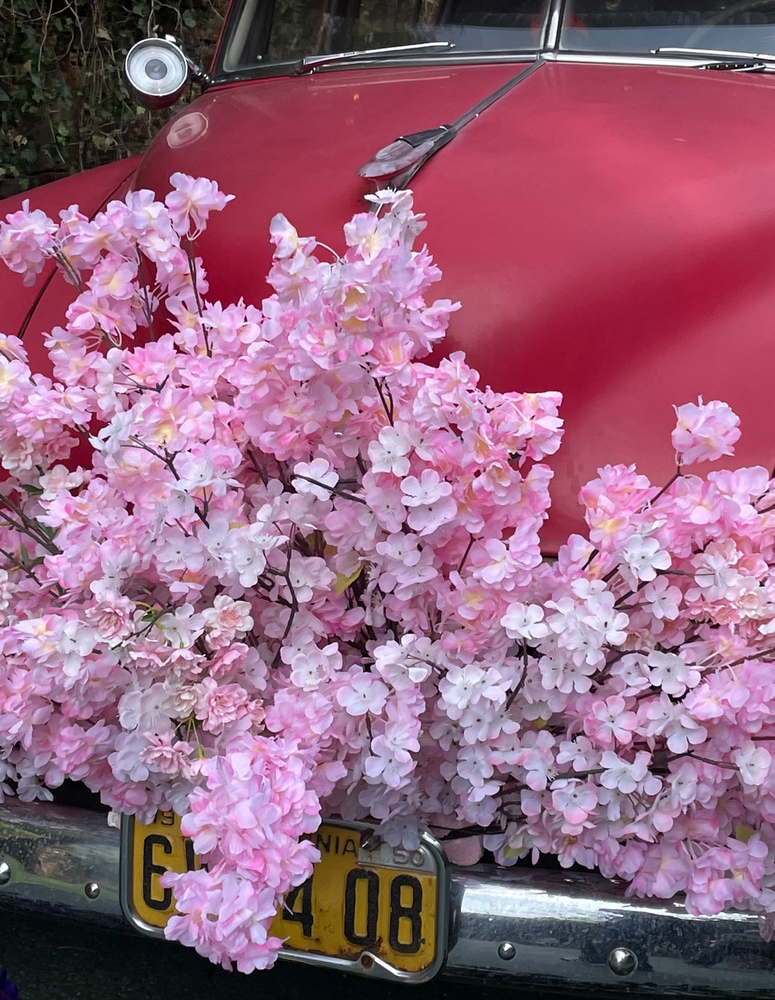
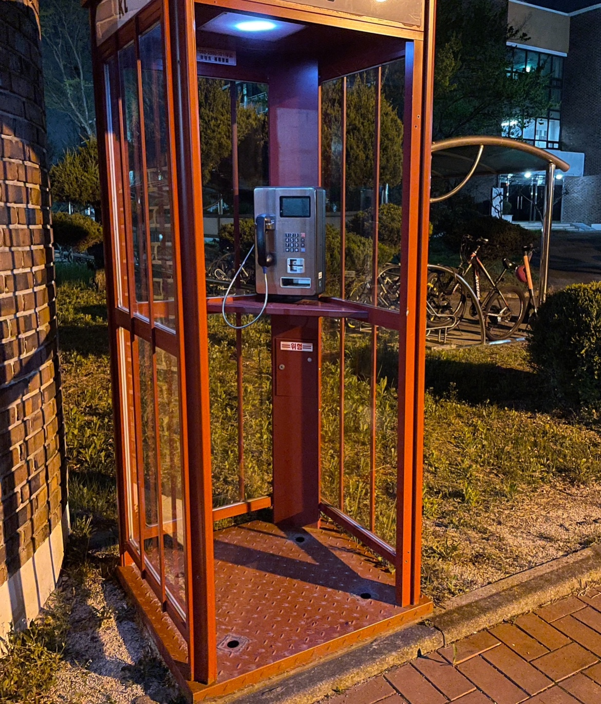
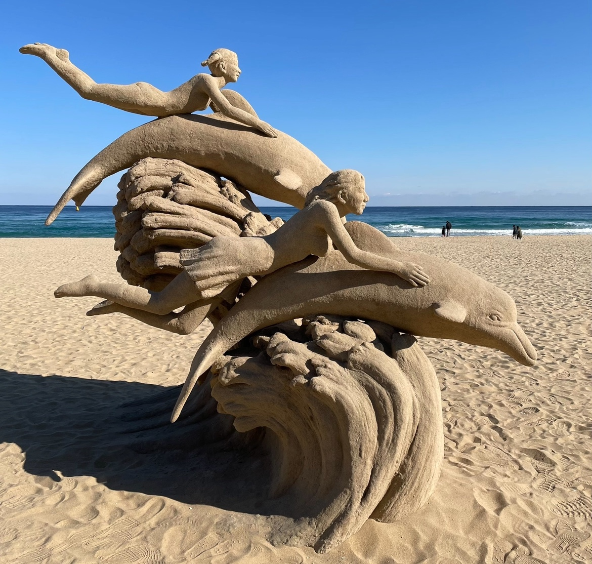
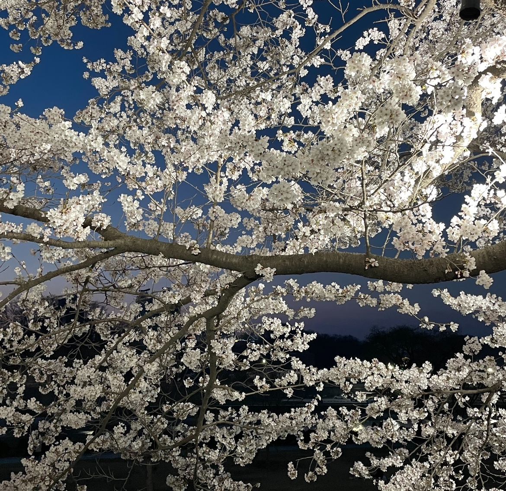
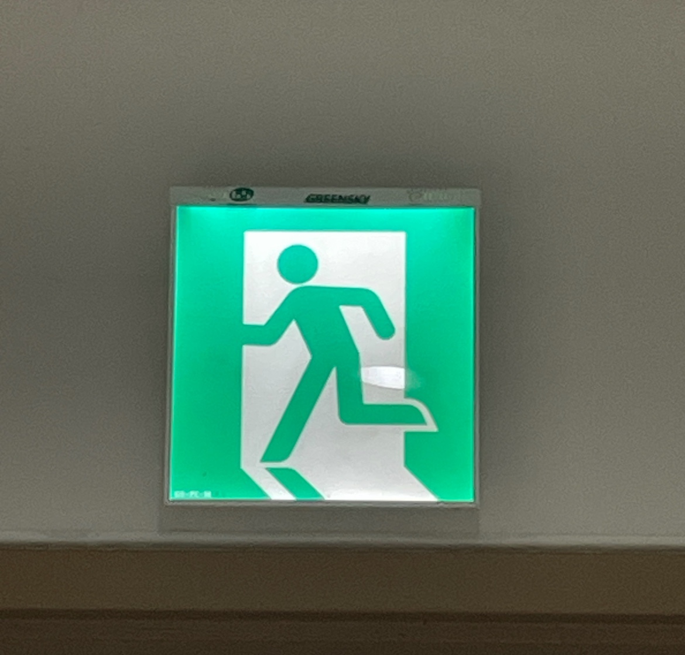

어항
대구 신세계 백화점에 위치한 아쿠아리움에서 본 물고기이다. 분홍빛이 도는 흰색 꽃을 가진 인조목을 중심으로 작은 흰색 물고기들이 헤엄치고 있다. 중심에 있는 흰색 인조목과 그 주면을 맴도는 흰색 물고기들이 마치 영남대학교 교내에 피어있는 벚꽃나무와 바람에 흩날리는 벚꽃잎을 연상시켰다. 진짜 꽃잎이 아니라, 동물인 물고기의 모습을 보고 식물인 벚꽃잎을 연상시킬 수 있다는 것이 흥미로웠다.
벽화
작은 그림들, 작은 패턴들이 모여 하나의 큰 물고기의 형상을 이루는 벽화이다. 벽화를 자세히 관찰해 보면 박쥐 그림도 있고, 단순한 풍경화도 있다. 하지만 큰 물고기를 이루는 작은 그림들의 생김새를 자세히 관찰해 보았을 때, 작은 그림들 또한 입을 벌린 긴 물고기의 형태를 띠고 있다는 것을 알 수 있다. 마치 조그마한 물고기들이 서로 뭉쳐서 하나의 큰 물고기처럼 보이게 하여 포식자로부터 몸을 지키고 생존율을 높이는 방어술처럼 보여 흥미로웠다.
기타
Swing의 S2 se plus 모델로, 내가 일렉기타를 처음 입문하고 연주하기 시작했을 때부터 쭉 함께하던 기타이다. 고등학교 시절에는 입시에 집중하느라 장식용 기타였던 시간이 많았는데, 대학교에 입학한 후 밴드부에 가입하면서 고등학교 시절보다 훨씬 기타를 연주하는 시간이 많아졌다. 집에 있는 흔한 사물 중 하나일지도 모르지만 나에게는 뜻깊은 사물 중 하나이다.
엘리베이터 버튼
엘리베이터 내부에서 흔히 볼 수 있는 층수를 선택할 수 있는 버튼이다. 최근 스마트 코딩 강의를 들으며 앞을 볼 수 없는 사람들의 위해 alt 속성에 시각 정보를 작성하고 있는데, 엘리베이터 버튼에 있는 점자도 코딩에서의 alt 와 같은 개념이지 않을까라는 생각을 하면서부터 엘리베이터를 탈 때마다 자연스레 점자에 눈길이 갔다. 또, 엘리베이터까지 가는 복도 바닥에도 오돌토돌하게 튀어나와있는 부분이 있어 앞을 볼 수 없는 사람들을 위한 것들이 생각했던 것보다 주변에 훨씬 많다는 것을 인식할 수 있는 계기가 되었다.
농구 골대
기숙사 앞 농구 골대이다. 고등학교 3학년일 때 같은 반 친구들과 야간자율학습이 끝난 뒤, 또는 야간자율학습 도중에 밖에 나와 농구를 했던 기억이 떠오른다. 또, 평일 저녁이나 주말 저녁에 아버지와 함께 집 앞 농구장에서 농구를 했던 적이 있다. 모든 수업이 끝난 후 기숙사를 가는 길에 항상 보이는 것이 농구장과 농구 골대이기 때문에 예전 기억이 떠올라서 항상 농구장을 쳐다보게 된다.
자동차와 벚꽃
어머니와 함께 대구 이월드에서 본 벚꽃과 자동차이다. 사진에는 나와있지 않지만 자동차 내부에도 꽃이 있다. 봄의 따뜻한 분위기와는 상반되는 더 이상 사람들이 살지 않는 도시의 봄, 포스트 아포칼립스 장르 영화의 한 장면 같았다. 자연과 인공물의 조화가 굉장히 아름답고 신비한 느낌이었다.
공중전화 부스
기숙사 앞 공중전화 부스이다. 초등학교를 다닐 때 휴대전화를 제출하여 부모님께 마땅히 연락할 방법이 없을 때, 초등학교 내에 위치한 공중전화 부스에서 부모님께 연락을 했던 기억이 난다. 최근에는 거의 대부분의 사람들이 개인 스마트폰을 소지하고 있기 때문에 공중전화 부스를 쓸 일이 거의 없어 더욱 추억을 회상시켜주는 공간이다.
모래 조형물
해변의 조형물 사진이다. 넓디넓은 모래사장을 위에 돌고래의 등을 잡고 파도를 타는 두 소녀의 모습을 한 조형물이 세워져있다. 모래로 만든 거라고는 생각하지 못할 만큼 정교하고 아름답다. 몇 년 전 잠깐 조소에도 관심을 가졌던 적이 있는데, 사람 얼굴 하나 만들기도 어려운데 이렇게 큰 조형물을 만들어냈다는 것이 신기하고 대단해서 몇 분 동안 해당 조형물만 바라보고 있었다. 파도를 뛰어넘는 돌고래와 소녀들의 모습이 시원하고 자유로워 보여서 더욱 보기 좋았다.
벚꽃
고향인 경상북도 영주시의 서천의 벚꽃이다. 4년 동안 빠짐없이 벚꽃이 만개할 때 친구들과 저녁에 서천을 방문하여 작은 벚꽃 축제를 즐겼던 추억이 있어서 이번에도 벚꽃을 보러 갔다. 매년 같이 벚꽃놀이를 오던 친구들이 모두 뿔뿔이 흩여서 만나기도 어렵게 되었다는 사실이 조금 슬프긴 했지만 오랜만에 꽃이 활짝 핀 서천을 걸으니 중, 고등학교 시절 생각도 나면서 좋은 시간을 보낼 수 있었다.
픽토그램
비상구 픽토그램이다. 최근에 소방훈련에 참여하면서 비상계단을 통해 11층에서 1층까지 내려간 적이 있는다. 기숙사가 익숙하지 않아 비상계단이 어디고 1층의 비상계단 통로는 어딘지 헷갈렸는데 비상계단 및 비상구가 어딘지 단번에 알 수 있게 해준 것이 바로 이 픽토그램이다. 누구나 한 번에 ‘이곳이 어떤 장소다!’라고 인식할 수 있게 해주는 것이 픽토그램이다. 나는 디자인을 할 때 가장 중요한 것이 ‘어떤 것을 보여줄 것인가’라고 생각하기 때문에 해당 훈련 이후 픽토그램의 중요성을 깨달았다.